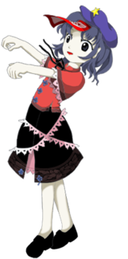
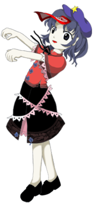

- Welcome to Touhou Wiki!
- Please register to edit. For assistance, check in with our Discord server or IRC channel.
Yoshika Miyako
Yoshika Miyako mʲijako joɕʲi̥ka (♫) | |
|---|---|
|
 Yoshika Miyako in Ten Desires Loyal UndeadMore Character Titles | |
| Species |
Jiang Shi (キョンシー Kyonshī) |
| Abilities |
Eating anything |
| Age |
Dead/Immortal |
| Occupation |
Guard |
| Location | |
Music Themes | |
| |
Appearances | |
| Official Games | |
| |
| Print Works | |
| |
Yoshika Miyako (宮古 芳香 Miyako Yoshika) is a Jiang Shi who is of an ancient era of Japan who was revived by Seiga Kaku to be the guard of Hall of Dreams' Great Mausoleum.
General Information[edit]
Yoshika first appeared as the stage 3 boss of Ten Desires and as an assistant of Seiga on the stage 4 boss battle, and performed attacks with her along with the title "Loyal Undead." She appeared in the background of Hopeless Masquerade and was a 4th Day Boss in Impossible Spell Card.
In order to not decompose like normal Jiang Shi do, she has an anti-decomposition spell placed on her. She has no sense or self, and does not know pain or fatigue, which allows her to bring out all possible physical strength and creates great difficulty to encounter. She usually attacks people for no particular reason, but is easy to run away from. However, she is set to have a particular amount of health, and even when defeated, she immediately recovers a few seconds later as shown Stage 4 of Ten Desires.
Personality[edit]
According to Symposium of Post-mysticism, she doesn't have much of a personality as a jiang shi, but whenever she is not under Seiga's control she does seem to revert back to the personality she had when she was alive. She has been seen reciting poetry while staring into empty space. Her thinking patterns are like a forgotten age of computers. Even regarding conversations with the main character, she forgot that she had a mistress, and did not remember what she was protecting, and is therefore a considerably problematic way of thinking.
Occupation[edit]
Prior to the events of Ten Desires, Yoshika is Seiga's faithful servant who guards the Hall of Dreams' Great Mausoleum. Her current activities are unknown.
Ability[edit]
- Eating anything
As literally stated. When she's hurt, she can suck in the surrounding divine spirits and eat them to increases her HP back to full, thus furnishing her with an ability to "recover her HP". If this is ignored, then it wouldn't be possible to defeat her spell cards, as time would run out. This could be why Kogasa Tatara wasn't able to win against her during Ten Desires.
Jiang shi seek out lifeblood and walk around aimlessly, and also has the characteristic of turning opponents into jiang shi upon bite. Yoshika also turns the living into jiang shi, and has a proactive attitude about increasing her companions. This behaviour may be due to a command, or it may be an instinctual behaviour of jiang shi.
Species[edit]
Since she's a Jiang Shi, her body is unusually stiff, and her joints cannot twist, and therefore she cannot walk straight. Seiga, in order to protect from injury, seems to recommend calisthenics to her.
Character Design[edit]
Origin[edit]
ZUN stated in an interview that her original design was too similar to Lei-lei(Hsien-ko) from Darkstalkers. Considering it too cliché, he instead made Yoshika a zombie whose brain was rotting away and was thus stupid.
Name[edit]
Her full name is Yoshika Miyako (宮古 芳香). The Miyako (宮古) in her name means "ancient palace", while Yoshika (芳香) means "fragrance", "perfume" if read together. The Yoshi (芳) can also mean "fragrance", "beautiful", "virtuous" when standing alone, and ka (香) "incense", which might be referring to either Yoshika being a jiang shi, or her guarding a graveyard.
Her name comes from Miyako no Yoshika (都良香), a ninth century Japanese scholar and poet. Legends say that 100 years after he left office, he was spotted on a mountain as a hermit, his face unchanged.
Design[edit]
In Ten Desires's official art, Yoshika has pale skin, dark blue hair and eyes. She wears a blue hat with a yellow star and an ofuda on the forehead, which apparently has a to-do list written on it by her master. She wears a red Chinese-styled shirt with a pink trim on the wide sleeves, and a black skirt with the same trim wrapped around it like a ribbon. She keeps her arms ahead, like a zombie.
Story[edit]
Games[edit]
- Ten Desires
When the heroine reaches the graveyard adjacent to the Myouren Temple, Yoshika meets her there. Having been revived to protect the Mausoleum from intruders, a fact which takes her a little while to remember, she does battle with the heroine and loses. Later, in stage 4, she is revived again and returns to team up with her master Seiga Kaku, but the two were defeated.
Spin-offs[edit]
- Hopeless Masquerade
Yoshika made a background cameo appearance in Hopeless Masquerade on the Hall of Dreams' Great Mausoleum stage. She is seen standing on the mausoleum watching the many fights.
- Impossible Spell Card
Presumably from hearing or seeing a wanted sign about the mischief-making amanojaku Seija Kijin, Yoshika appears to be one of the many youkai that tries to capture her. She uses spell cards that are considered impossible to dodge. Not only did she try to capture her independently, she was also controlled by her master on one spell card.
Literature[edit]

- Symposium of Post-mysticism
Humans that visited the graveyard started getting worried, as Yoshika had reappeared there and was driving everyone away. They bring in Rin Kaenbyou to communicate with her, and through a translator, she claims she isn't particularly intent on harming anyone, but just feels she has to defend the graveyard no matter what.
Relationships[edit]
People in Senkai[edit]
Yoshika is a corpse reanimated by Seiga Kaku in order to protect the Hall of Dreams' Great Mausoleum during Toyosatomimi no Miko's resurrection. Seiga is generally a master who treats her like a tool, but also thinks she's a cute underling who's rotten, and even in battle, she can be seen diligently reviving Yoshika.
Toyosatomimi no Miko is a fellow ally of the Hall of Dreams' Great Mausoleum and the purpose of guarding it under Seiga Kaku's orders. Mononobe no Futo and Soga no Tojiko are also fellow allies. However, no actual relationship between these three are established.
Minor Relationships[edit]
- People in the Myouren Temple
Yoshika Miyako purpose for guarding the Hall of Dreams' Great Mausoleum was to prevent Byakuren Hijiri and the rest of her allies of Myouren Temple from interfering with Toyosatomimi no Miko's resurrection. Also, Yoshika's presence in the cemetery becomes an unknown threat for Kogasa Tatara.
Rin is brought in to the graveyard to communicate with her and find out her intentions during the events of an article in Symposium of Post-mysticism.
Gallery[edit]
Yoshika's appearance in Wild and Horned Hermit
Spell Cards[edit]
| Name | Translated | Comments | Games | Stage | ||
|---|---|---|---|---|---|---|
| Total: 7 | ||||||
| 回復「ヒールバイデザイア」 | Recovery "Heal By Desire" | TD | St. 3: E/N/H/L | |||
| 毒爪「ポイゾンレイズ」 | Poison Nail "Poison Raze" | TD | St. 3: E/N | |||
| 毒爪「ポイゾンマーダー」 | Poison Nail "Poison Murder" | TD | St. 3: H/L | |||
| 欲符「稼欲霊招来」 | Desire Sign "Score Desire Spirit Invitation" | TD | St. 3: E/N | |||
| 欲符「スコアデザイアイーター」 | Desire Sign "Score Desire Eater" | TD | St. 3: H/L | |||
| 毒爪「死なない殺人鬼」 | Poison Nail "Undead Murderer" | TD | Ov | |||
| 毒爪「ゾンビクロー」 | Poison Nail "Zombie Claw" | ISC | St. 4 | |||
Additional Information[edit]
- She has a star on her hat that is similar to Hong Meiling's, but without a symbol.
- The relationship between Yoshika and Seiga probably is caused from the fact that the inspirations of both of them appears in Strange Stories from a Chinese Studio. There is a story "dead body incident" (simplified Chinese: 尸变; traditional Chinese: 屍變), the 7th chapter of the 13th volume.
- According to legends, Ibaraki-douji, model of Kasen Ibaraki, was deeply impressed after reading Miyako no Yoshika's works. Moreover, Kasen is seen reciting one of his poems in the first chapter of Wild and Horned Hermit.
- Yoshika is currently the only character in the whole series who can heal herself during a battle.
Fandom[edit]
Official Profiles[edit]
|  | ○３面ボス 忠実な死体
宮古 芳香（みやこ よしか） 種族：キョンシー
異常な力と痛みを感じない肉体で、まともにやり合うとえらい目にあうが、思考回路は前時代のコンピュータ並である為、逃げることは容易い。 彼女の闘いでは傷つくと霊を喰らい体力を増幅させる為、中々倒すことが出来ない。だが、逃げることは容易い（大切な事でした）
|
3rd stage boss Loyal Undead
Yoshika Miyako Species: Jiang shi
She possesses strange power and has a body that does not feel pain. It is very challenging to confront her directly, but her brain is like a forgotten age of computers. It is very easy to kite her around. While fighting, if she is damaged, she consumes spirits and regenerates health, so she's very hard to beat up. But it is very easy to get away from her (and this is important).
|
Official Sources[edit]
- 2011/04/15 Ten Desires Demo - Stage 3 dialogue; キャラ設定とエキストラストーリー.txt (pre-official profile)
- 2011/08/13 Ten Desires - Stage 3 dialogue; Omake.txt (official profile)
- 2011/11/25 Ten Desires special and two-part interview with ZUN
- 2011/11/25 Wild and Horned Hermit - Chapter 9 (cameo)
- 2012/04/27 Symposium of Post-mysticism
| This page is part of Project Characters, a Touhou Wiki project that aims to write proper descriptions for all official characters of Touhou Project. Please keep the character page guidelines in mind when contributing. |